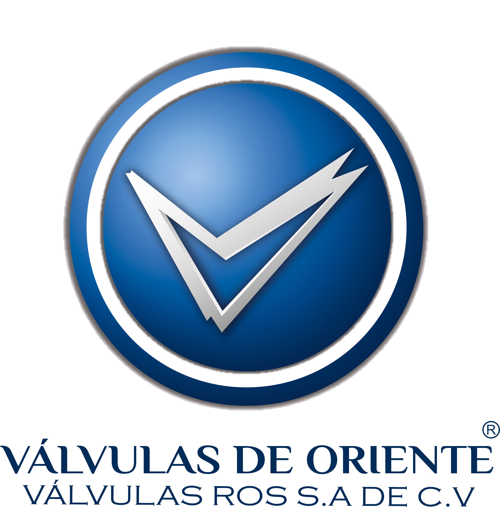

Misión
Proveer tuberías, válvulas y conexiones industriales de calidad certificada, con asesoría técnica especializada y tiempos de entrega confiables, para que cada proyecto de nuestros clientes se instale sin contratiempos.
En Válvulas Ros, entendemos que la continuidad de sus operaciones no admite demoras. Por ello, nos hemos consolidado como el aliado estratégico de la industria mexicana, garantizando certidumbre y excelencia en cada entrega de tuberías, válvulas y conexiones.
Contamos con un robusto inventario multimetal y sintético —PVC, acero al carbón e inoxidable, cobre y galvanizado— diseñado para responder a la exigencia de cualquier proyecto. Gracias a nuestra red de distribución con sedes en Puebla, Querétaro, Guadalajara y la Ciudad de México, estamos exactamente donde su operación nos requiere.
Más allá de comercializar componentes, entregamos valor: ingeniería, asesoría técnica transparente y productos rigurosamente certificados.

Proveer tuberías, válvulas y conexiones industriales de calidad certificada, con asesoría técnica especializada y tiempos de entrega confiables, para que cada proyecto de nuestros clientes se instale sin contratiempos.
Ser el proveedor de referencia en soluciones de tubería industrial en México, reconocido por la calidad de nuestros productos, la rapidez de nuestro servicio y la cercanía con cada cliente.
Materiales certificados y probados, con garantía en cada pieza que sale de nuestras sucursales.
Tiempos de entrega reales y comunicados con claridad, para que tu proyecto no se detenga.
Personal capacitado que te ayuda a elegir el material y la especificación correcta para tu instalación.
Seguimos disponibles después de la compra ante cualquier duda, garantía o pedido adicional.